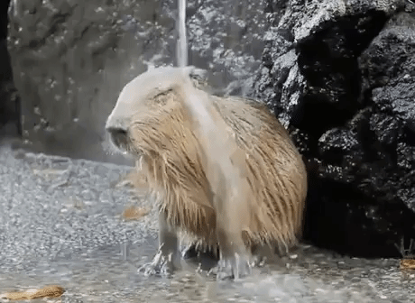

Капибары
Капибара - это крупнейший грызун в мире, обитающий в водоемах Южной Америки. Они имеют уникальную способность плавать и проводить много времени в воде.
Основные характеристики капибар включают:
- Вес: обычно от 35 до 65 килограммов.
- Длина тела: до 1,2 метра.
- Питание: главным образом травоядное, питаются травой и растениями.
- Обитание: обычно находятся у водоемов, таких как реки, озера или болота.
Капибары обладают общительным характером и часто образуют группы до 100 особей. Они социальные животные и могут даже ухаживать друг за другом.
Эти интересные создания играют важную экологическую роль, влияя на состояние водных экосистем и поддерживая их равновесие.
Капибары встречаются в культуре многих стран Южной Америки и являются объектом внимания туристов благодаря своей уникальной природе и образу жизни.